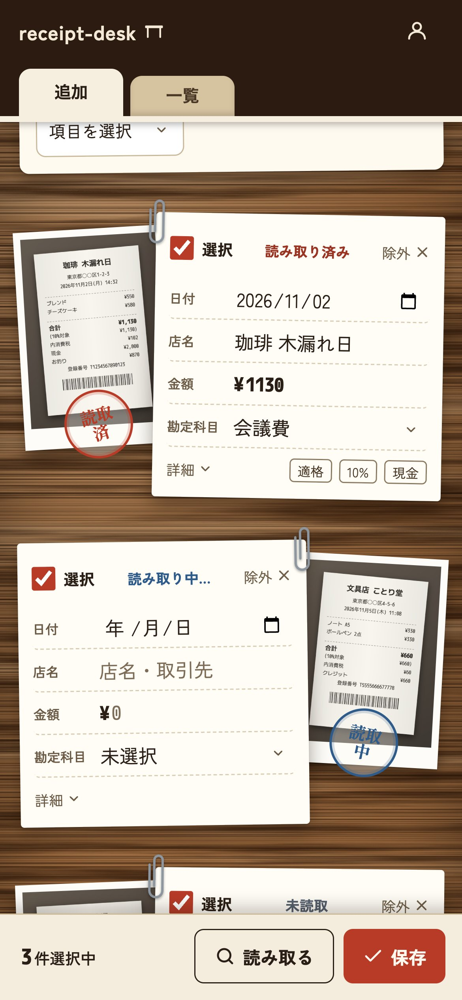

レシート・領収書の整理と、経費の記録に
写真フォルダと
会計ソフトの間に、
レシートの机を。
撮りためたレシートを広げて、まとめて読み取り、まとめて記入。画像はZIP、内容はCSVで、どの会計ソフトにも持っていける。
無料で始めるブラウザだけで使える今は無料プランのみ（AI読み取り 月30件まで）

会計ソフトにも
撮影機能があるのに、
なぜ別のアプリ？
束のまま、まとめて片付ける
会計ソフトの撮影機能は、1枚ずつ取引として登録する作りが多い。receipt-deskは撮りためた束を一度に広げて、読み取りも記入もまとめて済ませる。
どの会計ソフトにも持っていける
画像はZIP、内容はCSVで書き出せる。会計ソフトを乗り換えても、まだ使っていなくても、証憑は手元に残る。
記録と保管だけに絞った
仕訳や決算の機能はない。レシートの日付・店名・金額・勘定科目を記録して保管する。それだけだから迷わない。
使い方
月末に溜まったレシートも、5つの手順で片付く。
-
1 広げて、読み取る 撮影するか、写真から何枚でもまとめて選ぶ。「読み取る」を押すと、AIが日付・店名・金額などを順に読み取る。 -
2 まとめて記入して、保存 選んだレシートに、勘定科目や取引手段を一度に記入。書き換わる欄は赤枠で分かる。 -
3 帳簿で見返す 保存したレシートは月ごとの帳簿に並ぶ。勘定科目が空のものは赤字で目立つ。 -
4 写真を見ながら直す 行を押すと、写真と記入内容が開く。写真は押すと拡大できる。 -
5 書き出す 期間を選んで、画像はZIP、内容はCSVでダウンロード。
横にスワイプすると続きが見られる ／ 画面はサンプルデータ
証憑は、
いつでも全部持ち出せる。
個人で運営しているサービスに税務の証憑を預けるのは、不安があって当然。だから出口を先に用意した。
画像はZIPでまとめて
期間を選んで、レシート画像を1つのZIPに。ファイル名には日付と店名が入る。
内容はCSVで
汎用形式と、弥生形式（やよいの青色申告 オンライン）。会計ソフトへの取り込みや、確定申告の資料に。
退会すれば全部消える
アカウントを削除すると、レシートの記録も画像もすべて削除される。
receipt-deskでできること
- AIの自動読み取り日付・店名・金額・支払い方法・消費税率を読み取る。勘定科目は自分で選ぶ。
- インボイスの判定登録番号の記載から、適格請求書かどうかを判定する。
- 複数選んでまとめて記入店名・勘定科目・取引手段・摘要を、選んだレシートに一度に反映。
- 月ごとの帳簿と検索店名や摘要で探せる。空欄が残っているものもすぐ分かる。
- 画像だけの保管にも記帳は済んでいて、証憑として残したいだけのレシートも、日付なしで保存できる。
- スマホでもPCでもアプリのインストールは不要。ブラウザで開くだけ。
料金
今使えるプラン
無料
AI読み取り 月30件まで
- レシート・画像の保管件数は無制限
- 画像ZIP・CSVの書き出し
- 複数選んでまとめて記入
上限を広げる有料プランは準備中。
データの取り扱い
個人が開発・運営しているサービス。レシート画像はAI企業のAnthropic社に送信され、日付・店名・金額などを読み取る。保存データは日本国内のサーバーで管理し、アカウントを削除するとレシート・画像を含む全データを完全に削除する。詳しくはプライバシーポリシーへ。
溜まったレシート、
机に広げて片付けよう。